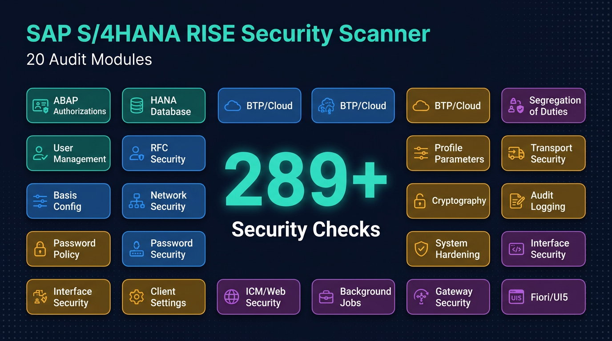
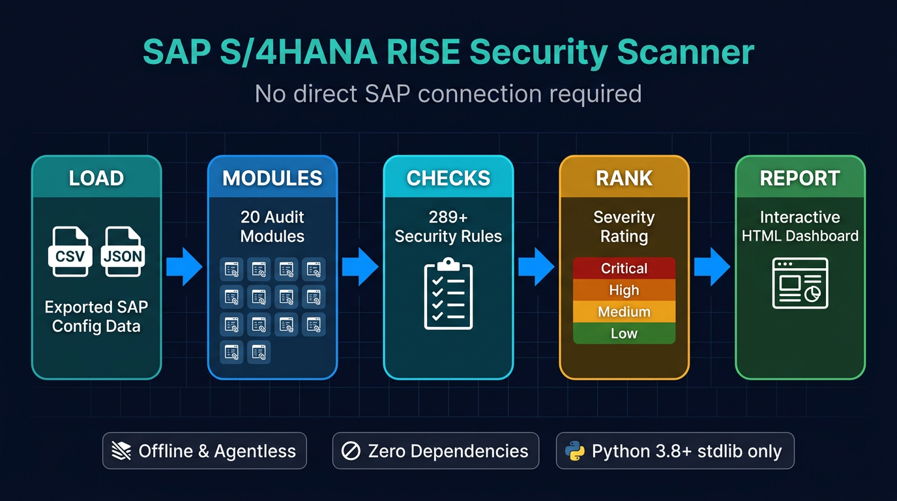
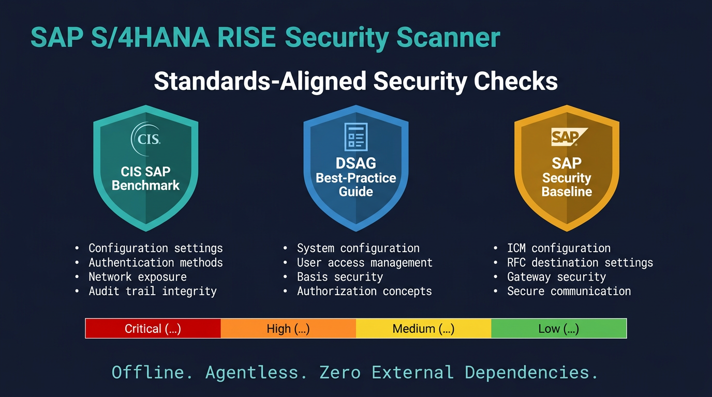

01Overview
SAP S/4HANA RISE Security Scanner is an offline, agentless security config-review tool for SAP S/4HANA RISE and BTP landscapes. Instead of connecting to the system, it ingests configuration you export from SAP as CSV/JSON (user master, AGR_1251 role content, profile parameters, RFC destinations, HANA system views, BTP Cockpit/Cloud Connector/CPI dumps, and more), runs 20 auditor modules over it, and produces a self-contained interactive HTML dashboard plus a multi-page PDF hand-over report ranked by severity with concrete remediation. Because it never opens an RFC or SQL session, it is purpose-built for RISE tenants where SAP runs the basis layer and customer RFC/DB access is restricted.
The scanner runs entirely on the Python 3.8+ standard library with zero third-party runtime dependencies — no agent, no connector, nothing to get approved through a change board. It ships 289+ checks spanning the classic ABAP stack (users, critical authorizations, SoD, security parameters, transports, custom code) and the cloud era (BTP subaccounts, Cloud Connector, destinations, IAS, CPI/Event Mesh, OAuth, S/4HANA business roles and CDS authorization). A standout is its GRC-style offline Access Risk Analysis: it resolves each user's transactions AND authorization object/field/activity across all roles from AGR_1251 + AGR_USERS, then evaluates a 25-conflict-plus-critical-access ruleset at the permission level so display-only access is not flagged as a false positive — honouring documented mitigating controls and producing a per-user risk score.
Every finding is backed by a bundled knowledge base (data/finding_details.json, 323 entries keyed by check-id) that supplies an in-depth Security Risk narrative and a numbered, step-by-step remediation naming the exact SAP transactions, reports, IMG paths, tables and parameters to change. Findings cite real SAP Notes, the SAP Security Baseline, CIS SAP and DSAG guidance, and the tool refuses to fabricate SAP identifiers — note numbers, CVEs and authorization objects are verified before shipping. The SAP Security Notes / HotNews module even diffs your SNOTE export against a curated catalog of major notes since 2020 (RECON, ICMAD, the 2025 NetWeaver VC RCE) and flags actively-exploited CVEs from CISA KEV.
It is built for SAP security architects, GRC teams, Basis administrators and external assessors who need a repeatable, evidence-based posture review without deploying tooling into a production SAP system. A crafted sample_data set (92 exports) triggers every check for demos and CI, and a pytest suite runs all 20 modules end-to-end on Python 3.8–3.12 so regressions that silence a check are caught automatically.
02Key Capabilities
Offline & agentless by design
Analyzes exported CSV/JSON configuration with no RFC, SQL or agent connection, making it safe for restricted-access RISE tenants and change-controlled environments.
Zero runtime dependencies
Runs on the Python 3.8+ standard library alone — no third-party packages to vet, install or get approved — with pytest required only for the dev test suite.
289+ checks across 20 audit modules
Covers the full SAP surface from ABAP authorizations, parameters and transports to BTP cloud, HANA DB, cryptography, data privacy and Basis job/OS-command hardening.
Offline permission-level Segregation of Duties
GRC-style Access Risk Analysis resolves tcodes and auth object/field/activity from AGR_1251 + AGR_USERS against a 27-risk ruleset, so display-only access never triggers a false positive.
Mitigating controls & per-user risk scoring
Honours documented, time-bound mitigating controls (reported as residual risk) and produces a severity-weighted risk profile for users concentrating multiple access risks.
ABAP critical-access role-content analysis
Parses AGR_1251 to flag Debug & Replace, S_RFCACL impersonation, S_TABU_* table maintenance, S_DEVELOP, S_PROGRAM and broad S_RFC — attributed to the users who actually hold each role.
BTP & RISE cloud attack-surface audit
Inspects Cloud Connector ACLs and certificates, destinations, IAS/MFA policies, service bindings, CPI iFlows, Event Mesh, OAuth clients and subaccount governance for cloud-native exposure.
SAP Security Notes / HotNews gap analysis
Diffs your SNOTE export against a verified catalog of major notes since 2020 and flags missing Priority-1/2 notes plus actively-exploited CVEs listed in CISA KEV.
HANA database security module
Checks privileged DB users (SYSTEM, password lifetime, dormancy), PUBLIC and system-privilege grants, the _SYS_BI_CP_ALL analytic bypass, DB auditing and HANA ini parameters.
Basis jobs & external OS-command hardening
Maps the realised host-command-execution surface from SM69/SXPGCOSTAB and TBTCO/TBTCP — shell-wrapping commands, ADDPAR injection, RSBDCOS0 bypass and privileged/borrowed step users.
Dual HTML + PDF reporting
Emits a self-contained dark HTML dashboard with live severity filtering and a formal multi-page PDF hand-over report, both rendered by a dependency-free standard-library PDF engine.
Knowledge-base-backed remediation
A 323-entry findings knowledge base attaches a detailed risk narrative and numbered, transaction-level remediation steps to each check, with graceful fallback when no entry exists.

03Architecture
A single CLI orchestrator (sap_scanner.py) loads exported SAP data through a normalizing DataLoader, dispatches it to 20 independent auditor modules that each subclass a common BaseAuditor and emit severity-ranked findings, enriches those findings from a JSON knowledge base, and renders them to HTML and/or PDF. The pipeline is LOAD (CSV/JSON exports) -> MODULES (20 auditors) -> CHECKS (289+ rules) -> RANK by severity -> REPORT, with every stage running purely on the Python standard library.

04Project Structure
sap_scanner.pyMain CLI entry point and orchestrator that loads data, runs the selected auditor modules and writes the report.modules/The 20 auditor modules plus BaseAuditor, DataLoader, the HTML/PDF report generators, the stdlib PDF engine and the findings-KB loader.modules/base_auditor.pyBaseAuditor superclass providing the finding() factory, severity constants and baseline-config accessor shared by every module.modules/access_risk_analysis.pyOffline, permission-level Segregation-of-Duties engine (ARA-*) with a 27-risk ruleset, mitigating controls and per-user risk scoring.modules/abap_authorizations.pyAGR_1251 role-content analyzer (AUTH-001..015) flagging critical authorization objects and attributing them to users.data/finding_details.json323-entry knowledge base of detailed risk narratives and step-by-step remediation keyed by check-id.sample_data/92 crafted demo export files that trigger every check, used for demos, the pytest suite and the CI smoke run.tests/pytest fixtures and a parametrized suite that runs each module over sample_data, validates the finding contract and check-id uniqueness, and runs the CLI end-to-end.docs/Export guide (how to pull each file from SAP), the complete per-check reference and the README banner..github/workflows/tests.ymlCI running the pytest matrix on Python 3.8–3.12 plus a full sap_scanner.py smoke run on every push and pull request.requirements-dev.txtDev-only dependency (pytest); the scanner itself needs nothing beyond the standard library.CLAUDE.mdContributor/AI-assistant guidance documenting the architecture, the module recipe and hard-won conventions (no fabricated SAP identifiers, run the full scanner, etc.).05Security Controls
06Technology Stack
- Language
- Python 3.8+ (CI-tested on 3.8–3.12; typing-based hints for back-compat)
- Runtime dependencies
- None — standard library only (csv, json, html, argparse); no requirements.txt/pyproject by design
- Reporting
- Self-contained HTML dashboard + dependency-free standard-library PDF engine (pdf_writer.py)
- Testing
- pytest suite running every module over sample_data (finding contract, check-id collisions, HTML render, CLI end-to-end)
- CI
- GitHub Actions matrix (Python 3.8–3.12) + full sap_scanner.py smoke run on push/PR
- Config
- JSON baseline overrides (--config) and extensible ARA/HotNews rulesets (ara_ruleset.json, sap_security_notes.json)
- License
- MIT
07Quick Start
$ git clone https://github.com/Krishcalin/SAP-S4HANA-RISE-Security-Scanner.git && cd SAP-S4HANA-RISE-Security-Scanner $ python sap_scanner.py --data-dir ./sample_data --output report.html # run all modules against bundled sample data $ python sap_scanner.py --data-dir ./exports --output report.pdf --format both # HTML + PDF hand-over report $ python sap_scanner.py --data-dir ./exports --modules ara authz # offline SoD + ABAP critical-access review $ python sap_scanner.py --data-dir ./exports --modules hanadb hotnews --severity HIGH # scope modules and minimum severity $ python -m pip install -r requirements-dev.txt && python -m pytest -q # run the test suite (pytest only)
08Compliance & Frameworks

09Integrations & Outputs
Explore SAP S/4HANA RISE Scanner
Full source, documentation, and deployment guides live on GitHub.